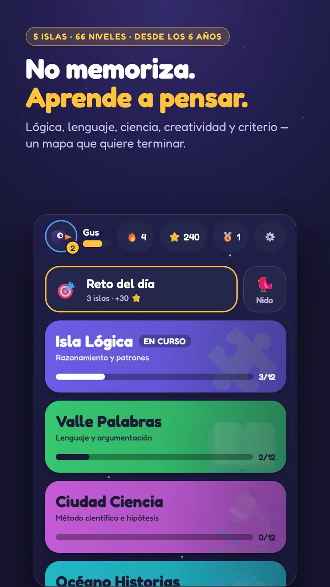
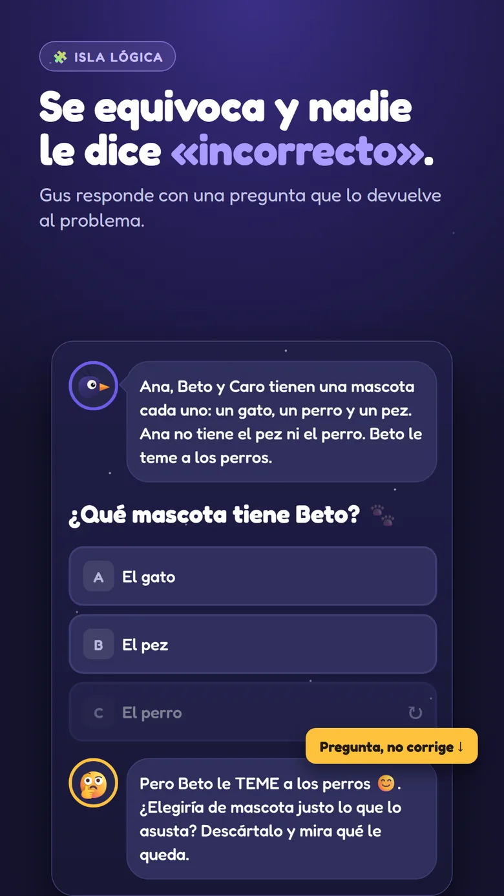
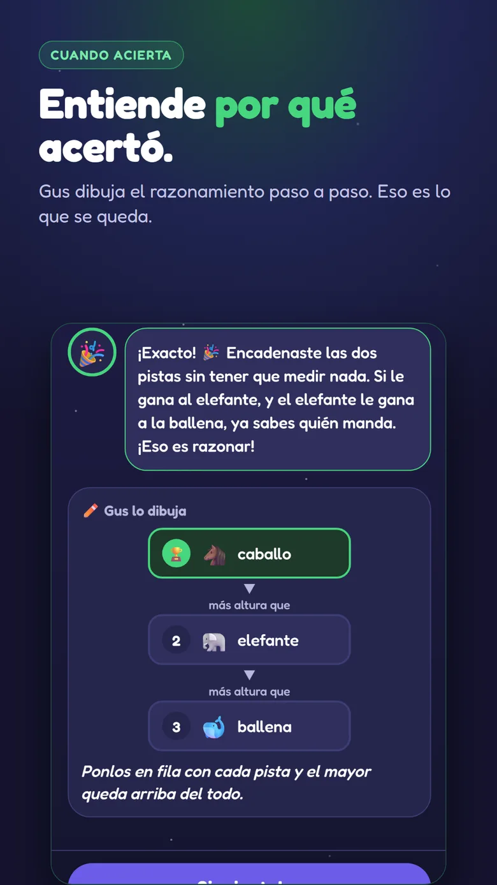
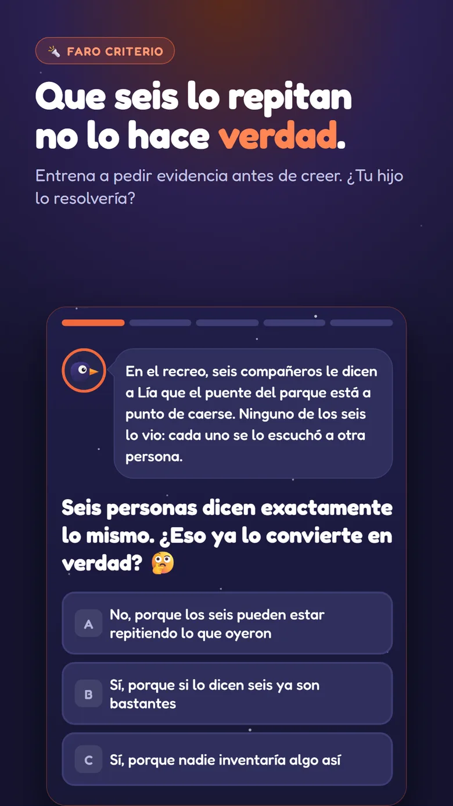
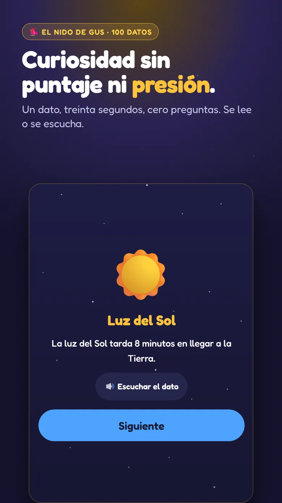
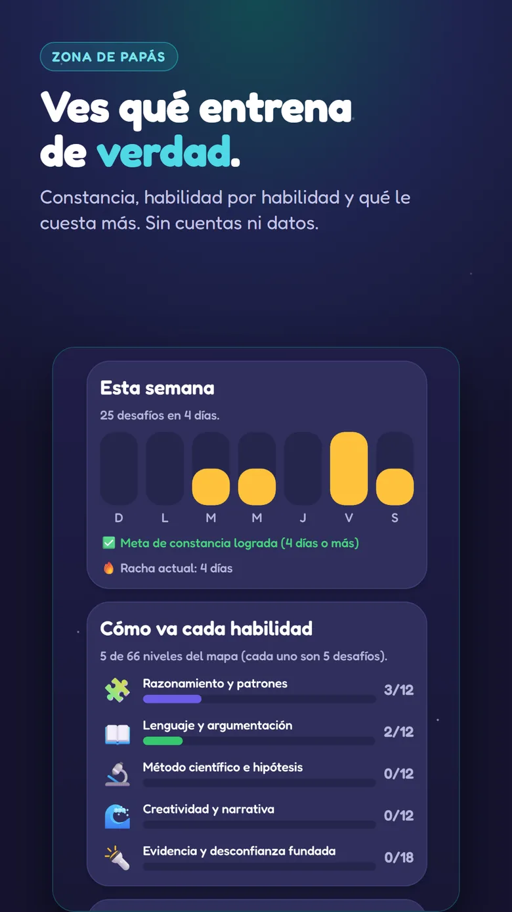

Por qué existe
Va a crecer entre máquinas que le responden todo.
Ahí el razonamiento crítico deja de ser una materia más: saber si esa respuesta
sirve —quién la dice, qué gana con que le crea y con cuánto la probaron— es justo
lo único que ninguna máquina le va a dar hecho.
Y no se aprende de grande. Se forma entre los 6 y los 12 años, que es cuando el
niño está armando la manera de pensar que va a usar toda la vida. Cavila entrena
exactamente eso: no es un juego donde se memorizan respuestas, es donde se
aprende a encontrarlas.
-
Isla Lógicarazonamiento y patronesDeducirPatronesOrdenar pasosDescartar
-
Valle Palabraslenguaje y argumentaciónArgumentarQué quiso decirComparar razones
-
Ciudad Cienciamétodo científico e hipótesisProbar una ideaMedirQué falta saber
-
Océano Historiascreatividad y narrativaImaginar finalesHilar una historiaPonerse en otro lugar
-
Faro Criteriola isla más larga · 18 nivelesQuién lo diceComparado con quéEl que te apuraJuntos no es porqueLos que no llegaron
Por dentro
Así se ve.






Cómo lo hace
Gus nunca dice «incorrecto».
Gus es un cuervo. Cuando el niño se equivoca le devuelve una pregunta —«¿y qué pasaría si…?»— y el niño vuelve al problema en vez de esperar a que alguien le dé el resultado. Cuando acierta, le dibuja el razonamiento paso a paso: lo que se queda no es el acierto, es entender por qué.
-
66 niveles, 5 desafíos cada uno
Tres formas de pensar que se turnan: elegir con argumento, ordenar pasos y emparejar ideas. Y se adaptan a la edad, desde los 6 años.
-
El Faro Criterio
Que muchos lo repitan no lo comprueba. Que dos cosas pasen juntas no quiere decir que una causó la otra. Un número que no dice comparado con qué no dice nada. Y la lista de los que ganaron nunca trae a los que hicieron lo mismo y no llegaron.
-
No se enseña a desconfiar
Un niño cínico no piensa mejor: piensa menos. Se enseña a averiguar una cosa más antes de creer — con zapatillas, gatos gigantes y camisetas de la suerte, que es donde se lo encuentra de verdad.
Para el papá o la mamá
Lo que no tiene, y no va a tener.
-
Sin anuncios
Ninguno, en ninguna parte.
-
Sin internet y sin datos
Todo el juego funciona con el avión encendido. No pedimos nombre, correo ni edad exacta; el progreso queda en el teléfono y desinstalar la app lo borra entero.
-
El niño no compra nada
Las monedas del juego se ganan pensando. Y la Zona de Papás tiene puerta: ahí se ve cómo razona tu hijo y en qué está creciendo.
Lo que lo va a distinguir no es cuánto memorizó.
Es si aprendió a preguntar bien, a dudar de una respuesta y a averiguar una cosa más antes de creerla.
Todavía no está en Google Play Cavila está en prueba cerrada. Cuando salga a la tienda, el botón de descarga va acá.